LazDebian
LazDebian is a Lazarus design time package that allows creating
Debian / Ubuntu Packages from any existing Lazarus project with no
or only minimal changes to the project and with only a few clicks
of the mouse. You find it here:
https://github.com/prof7bit/lazdebian
Creating Debian binary package
select "Debian Options..." from the Project menu:
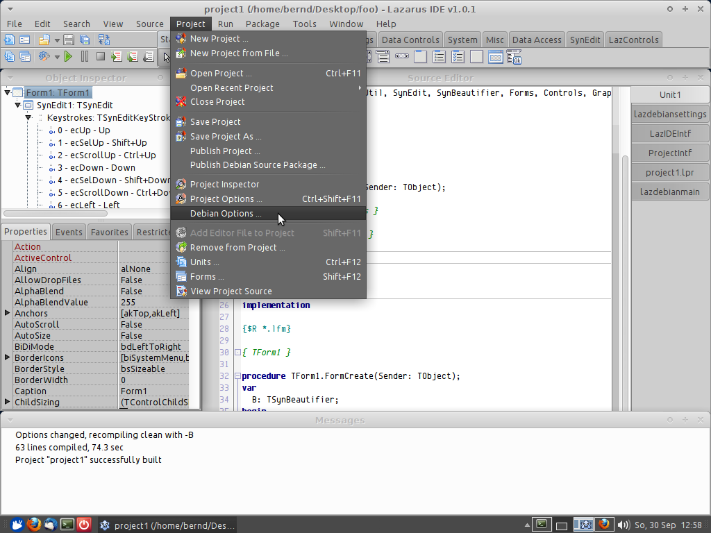
...and make sure everything is set up correctly,
you need to provide valid names, email adddresses, description and also
a license on the "debian/copyright" tab, default template is GPL-2. The
default templates on the other debian/* tabs should be suitable for
most projects out of the box. All changes you make to these templates
and settings will be saved in the project file:
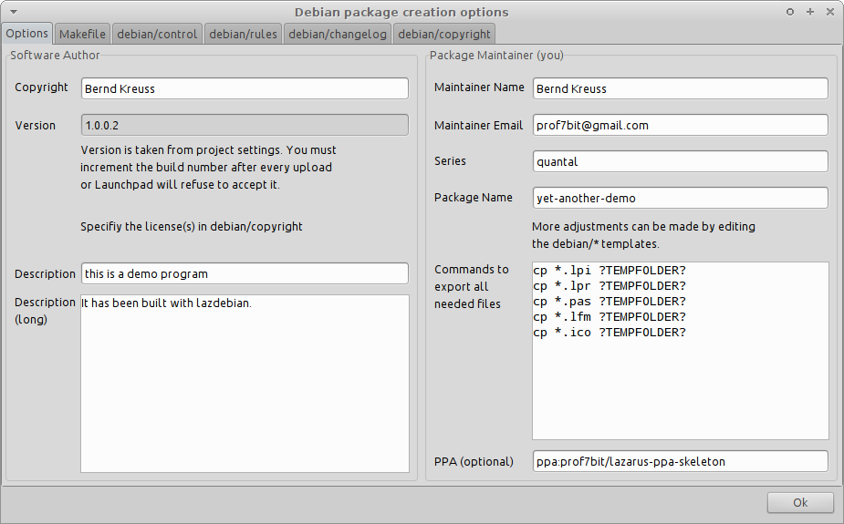
Now select "Build Debian Binary Package..." from the Run menu:
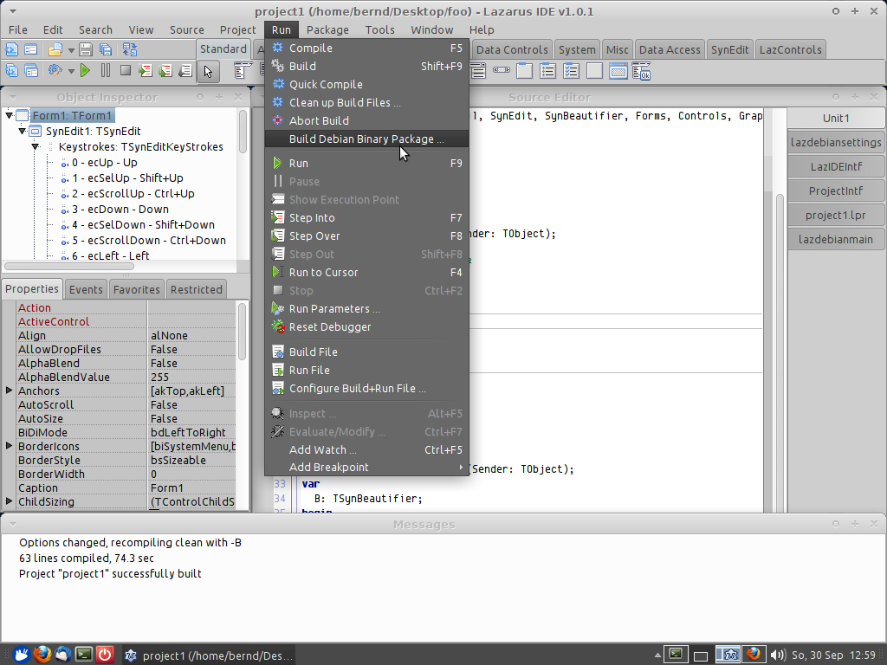
Optionally sign it (for signing you need a gpg key for your email
address, the same email address that you entered on the Debian settings dialog)
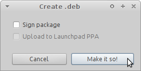
and now the package will be built (note that there may be lintian warnings
at the end of the build, you should carefully inspect them, here we obviously
did something wrong in our copyright file, it needs to be a special machine
readable format documented by Debian but since it is flagged only as
warning (W) and not as error (E) we will continue for now.
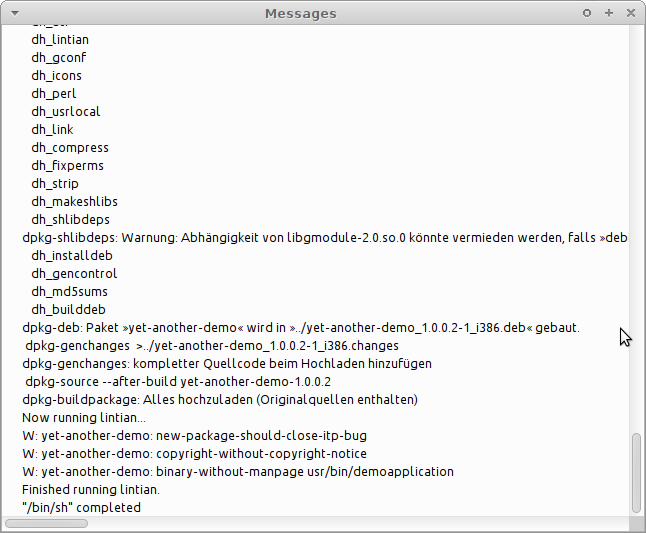
the binary package can be found in the DEBUILD folder in your project,
its the file with .deb at the end, thats all that is needed to install
it with dpkg -i:
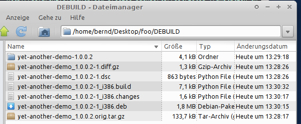
If we look inside with archive manager we see what folders and files
it contains:
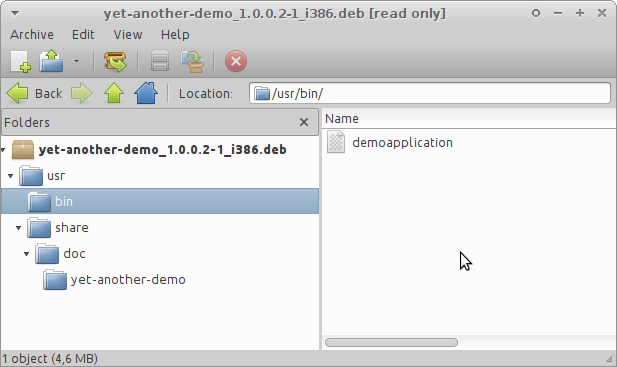
and we could distribute this package to other computers and install it
with dpkg -i or with gdebi and it would install its executable file
into /usr/bin
Source package
LazDebian can also be used for creating a source package and upload it
to your Launchpad PPA. Like above make sure all settings are correct,
especially also the email address needs to correspond to your gpg key
and the gpg key must be linked to your launchpad account. Also make sure
you increment the version number if you upload the same package again
(for example after a failed build and after fixing bugs). Select
"Publish Debian Source Package..." and then in the next dialog optionally
click "Sign" and "Upload":
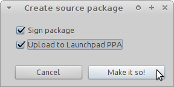
after building and before upload it will ask for your pasphrase to sign
the package:
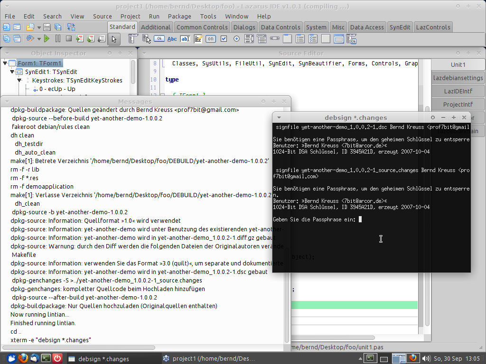
and then it should upload and finish without errors:
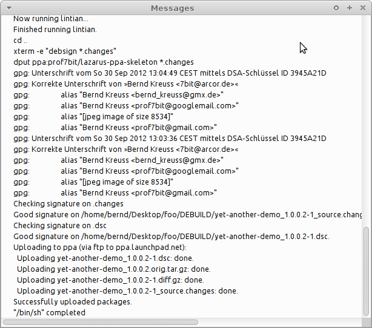
Soon after this you will receive a confirmation email from Launchpad:
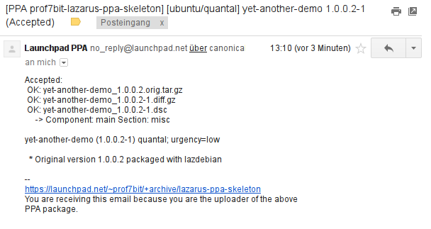
And on Launchpad you will see it start building (or enqueued for building soon):
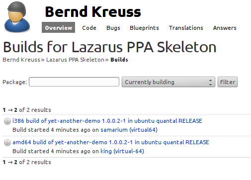
and success:
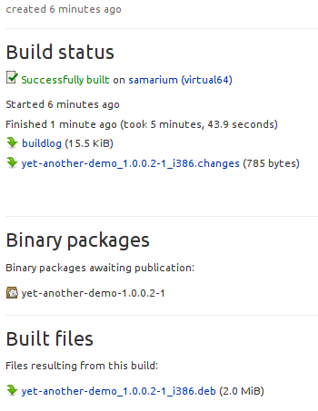
if you have added the repository with apt-add-repository and after
apt-get update you will be able to apt-get install the package soon
after the build has completed.
Problems
Unfortunalely Ubuntu still has only Version 0.9.30 of Lazarus and also
a pretty old FPC 2.4.4 on Precise (2.6 on Quantal). Your Project should
compile and work locally with these old versions before you attempt to
upload to launchpad (my example project from above did compile but does
not run because I made it with Lazarus 1.0 and used properties in my lfm
file that did not yet exist in older LCL, just in case anybody who is
reading this tries to install the demo from the above PPA now).
An alternative would be to make a sophisticated
makefile that would first download and install current FPC and Lazarus
on their build server before starting the build of your project but this
looks like a very hackish idea (but maybe someone might try just for fun).